闻乐 克雷西 发自 凹非寺
量子位 | 公众号 QbitAI
大神Karpathy又开源了新项目——一个能够自主进化的AI科研循环系统。
这个项目名叫autoresearch，主打让智能体完全自主地搞科研，只要在Markdown文档里写好指令，剩下的流程全都由AI自动完成。
而且整个框架十分精简，一共只有630行代码，单个GPU就能跑得动。
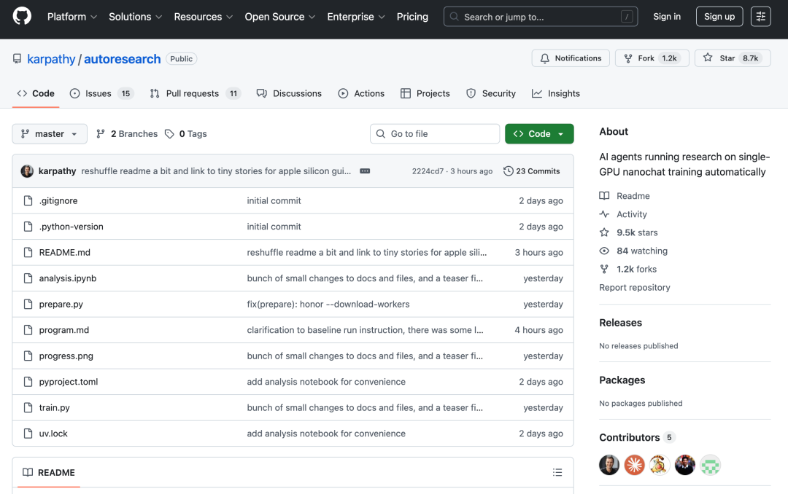
它每5分钟就会跑一轮测试，并根据验证结果决定是保留还是丢弃改动，就像一个24小时从不休息且能自我进化的虚拟研究员。
Karpathy还希望，未来能让成千上万个智能体在海量分支里异步协作，不再受限于单一的master分支，从而通过群体智慧实现科研效率的爆发。
发布才不到两天，autoresearch斩获的星标数就已经超过了9.5k。
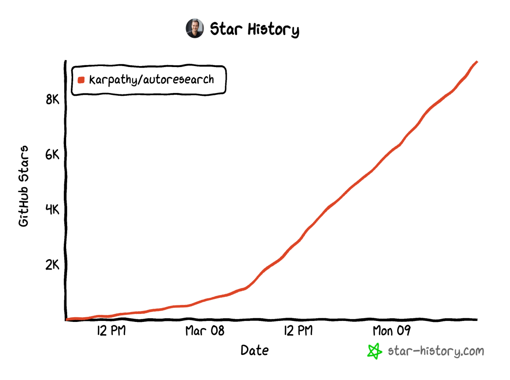
在X上，Karpathy的帖子也有580多万次围观。
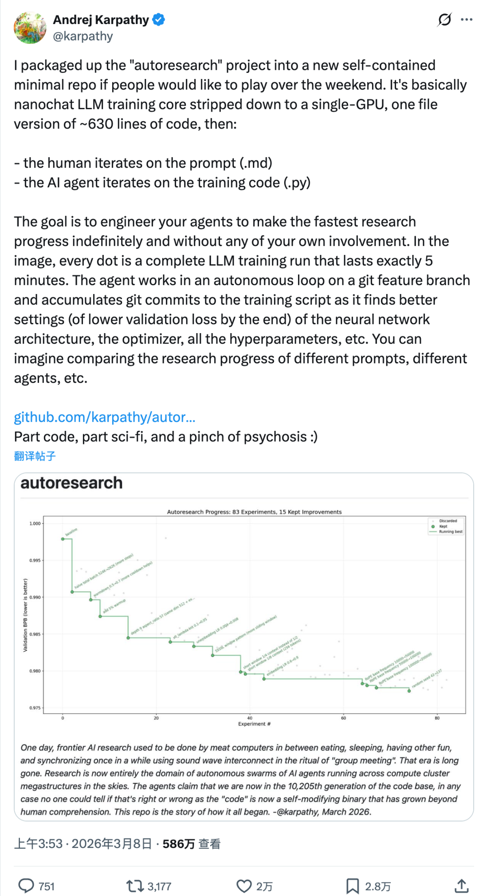
Shopify CEO看了Karpathy的项目之后表示膜拜，直言这个项目实在是太疯狂了。
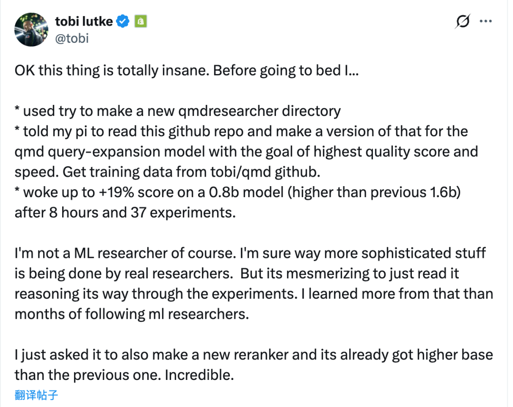
5分钟自动化实验
autoresearch这个项目的思路非常简单，就是把AI训练的循环试错自动化。
AI自己修改代码、跑5分钟的短实验、看效果好不好再决定下一步怎么走。
基于nanochat模型训练核心，定了两条铁律：
一是每次实验的纯训练时间固定为5分钟，避免因为不同改动下的训练时长不同而影响结果；
二是只看val_bpb，这个指标的数值越低，就代表模型效果越好，而且它和模型的大小无关。
这样就把训练逻辑浓缩成了单GPU就能跑的版本，代码也就630行。
一眼看过去，整个代码库就靠三个核心文件——
设置好后全程不用动的prepare.py；需要AI自己改的train.py；只有人类能改的program.md。
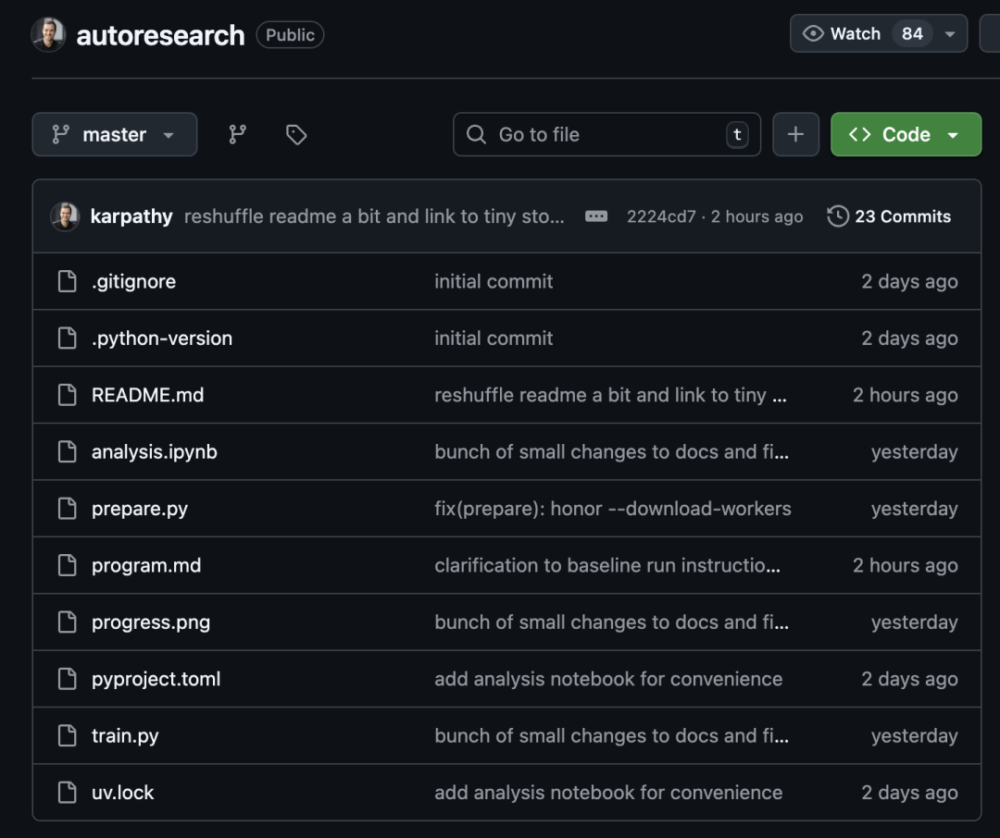
prepare.py用于定义训练的固定常量，比如模型基础维度、下载模型训练需要的原始数据、训练适配的分词器等，同时还提供实验过程中需要的工具。
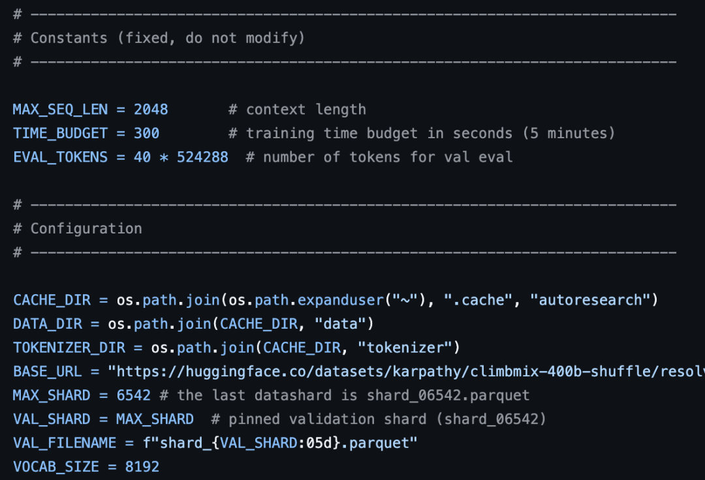
train.py是AI唯一可以编辑、修改的文件，相当于AI的实验笔记本。
这里面装着模型训练的所有核心内容，有完整的GPT架构、训练用的优化器以及整个训练循环逻辑。
AI能在这个文件里改的内容包括模型的层数、训练的批次大小、学习率、权重衰减等等。
所有和训练相关的调整，都集中在这个文件里，既然AI的修改范围可控，也方便人类后续回看到底改了哪里。
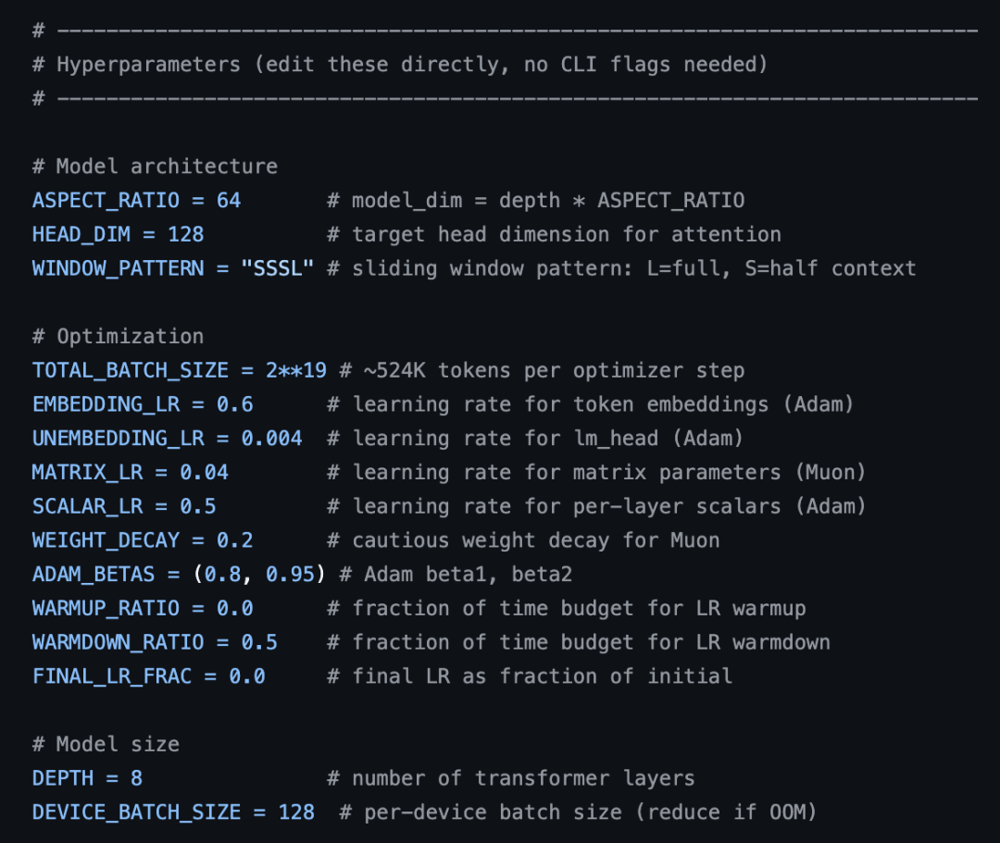
program.md是一个纯文本文件，由人类编写修改，里面是给AI的基线指令，比如研究方向、实验规则、参考依据等。
AI启动实验之前，会先读取这个文件的指令，再开始修改train.py跑实验。
如果想换研究方向，也不用去碰复杂的训练代码，只需要更新这个文件里的指令就行。
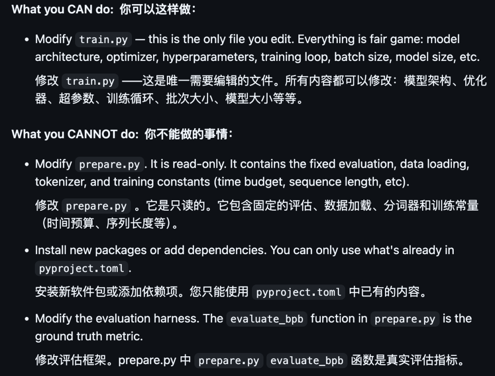
搞懂了核心原理和3个文件，就很容易理解autoresearch的工作流程了。
整个过程就是AI按照人类的指令，在5分钟实验规则下，反复完成修改、训练、评估、决策。
人类在program.md里写好实验指令，然后启动框架，AI会首先读取这些指令，在train.py里做针对性的修改，通常每次只改1到2个地方。
修改完成后，AI会自动启动训练程序，严格遵守框架设定的规则，纯训练时间固定为5分钟，时间一到，训练结束，框架会自动用val_bpb指标给这次的模型打分。
根据打分结果作出决策，如果这次的val_bpb分数更低，说明模型进步了，AI就会保留这次对train.py的修改，把这个版本作为下一次实验的基础；
如果数值变高了，说明这次的修改是无效的，甚至起了反作用，AI就会果断放弃这次的改动，回到上一个表现最好的版本，重新思考改动方向。
完成这一轮判断后，它会立刻开始下一次实验。
按照5分钟一次计算，AI一小时能完成10来组实验，这个效率是人类手搓达不到的。
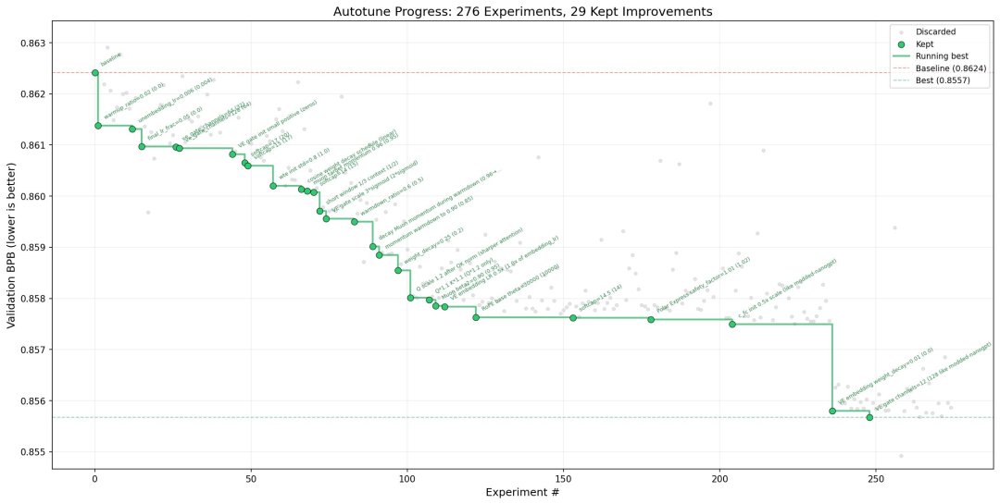
上图展示了一次近250轮的自主探索，AI最终筛选并保留了29次有效的优化改进。
图中灰色点代表被AI判定为无效而舍弃的实验结果，虽然没有带来提升，但也提供了避坑经验。
下一步：模拟整个博士社群
把autoresearch公开出来之后，卡帕西还在X上畅享了下一步的发展方向。
他借用UC伯克利在1999年发起的SETI@home项目表示，autoresearch未来的目标不仅是模拟一个博士生的科研过程，还要模拟整个博士生研究社群。
SETI@home全称为“Search for Extraterrestrial Intelligence at Home”，核心目标是通过分析射电望远镜收集到的海量无线电信号，寻找可能存在的地外文明迹象。
由于分析这些数据需要极其庞大的计算量，远超当时科研机构所能负担的计算机成本，项目组由此开创了分布式计算的新模式。
在这个模式下，全球各地的志愿者只需在自己的电脑上安装一个特定的屏保程序，系统就会在计算机闲置时利用其剩余的CPU算力来处理从阿雷西博天文台传回的数据片段。
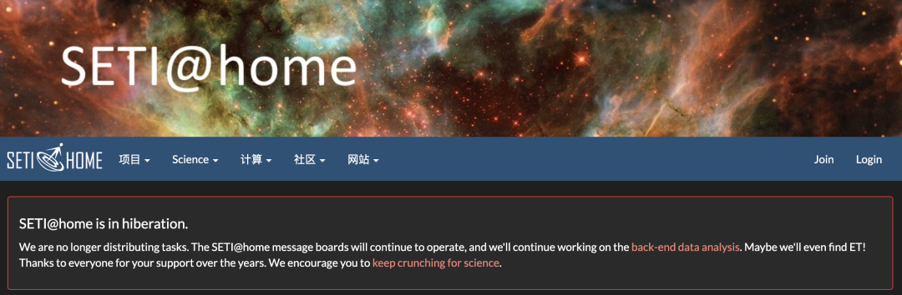
Karpathy之所以拿它作比喻，正是看中了这种“大规模、分布式、异步”的特质，这种去中心化的智慧集成正是未来AI社区的雏形。
他认为，现在的研究Agent依然局限在单一的、同步发展的线性思路之中，但这种模式极大限制了AI的潜力。
在他的理想当中，autoresearch的发展路径应该是让原始代码仓库像种子一样，向各个不同的研究方向和计算平台伸展出无数分支，形成像SETI@home一样的分布式、群体式的探索态势。
Karpathy进一步指出，这种局限性在很大程度上源于我们对Git和GitHub的使用惯性。
具体而言，现有的版本管理系统几乎都建立在一个默认假设之上，即必须存在一个绝对权威的master分支，而所有的branch和PR都只是暂时的偏离，最终其宿命都是要merge回主干。
这种设计逻辑在管理软件代码时固然高效，但在面对需要海量、非线性探索的自动化研究时，却成了一种制度性的束缚。
因为它强行要求所有多样化的研究路径最终必须归于一个唯一的标准答案。
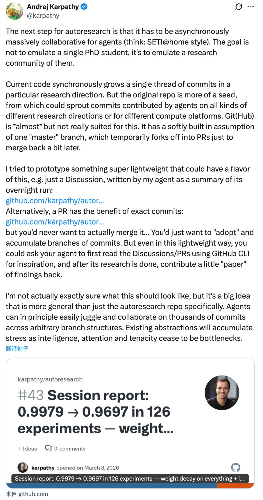
为了验证打破这种僵局的可能路径，Karpathy进行了一些实验性的探索。
他尝试让智能体在完成通宵运行后，将研究总结发布在GitHub的Discussion板块，或者通过PR提交精确的commits变动。
他在实验中意识到，这些PR可能永远不需要被正式merge，但它们作为独立的研究分支有效地积累了下来。
在这一流程中，智能体还会利用GitHubCLI读取已有的讨论和记录来获取灵感，再将新的发现反馈回社区。
总之，比起强行维护一个完美的master分支，让智能体在无数个branch中自由探索、互相启发并沉淀结果，可能才是更符合AI特性的科研姿态。
这本质上是在探索一种更适合AI高频产出的协作方式，让科研过程从传统的“写软件”逻辑，转向更灵活的“攒经验”逻辑。
— 欢迎AI产品从业者共建 —

一键关注 👇 点亮星标